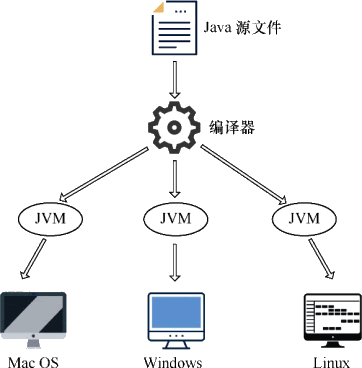
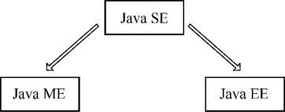

首页 > 编程笔记
Java是什么（入门必读）
众所周知，IT 是一个高速发展、技术更迭日新月异的行业。随着编程技术的不断发展、更新，越来越多的编程语言层出不穷，令大家不知如何选择。
面对种类繁多的编程语言，零基础的初学者究竟应该选择哪种编程语言来入门呢？掌握哪门编程语言能够更好地应对IT技术日益革新、多态化发展的大趋势呢？综合以上思路，这门语言应该具备以下特质：
什么语言这么强大，可以满足这些要求呢？没错，就是 Java。
Java 是由 Sun（Stanford University Network）公司于 1995 年 5 月 23 日正式推出的一套计算机高级编程语言，它拥有 20 多年的发展历史，这足以表明 Java 很稳定。
Java 适用于多个领域，从早期的终端设备到现在流行的电商、桌面管理软件、机顶盒设备、车载导航、安卓移动端等，涵盖面非常之广，并且可以做到跨平台，无论是 Windows 系统、Linux 系统，还是 Mac OS 系统，都可以运行 Java 程序。
多年以来，Java 始终在编程语言排行榜中名列前茅，是全球范围内使用人数最多的编程语言之一。同时，市场对 Java 开发工程师的需求量也很大，在各大招聘网站上，Java 相关岗位的招聘信息非常多。
Java 是面向对象的编程语言，面向对象是一种易理解、上手快的编程思想，同时 Java 提供了功能非常强大的系统类库，多种多样的工具类任你使用，开发者只需要关注业务逻辑，然后根据具体需求去调用这些工具类即可，底层的具体实现不需要关注。因此，相比于 C++ 这种偏向底层的高级编程语言，Java 更容易上手。
Java 语言具备如下特点:
在全球范围内，选择 Java 作为后台开发语言的公司数不胜数，比较知名的国外互联网公司包括 Google、YouTube、Amazon、Twitter 等，国内的知名公司有阿里、腾讯、百度、新浪、搜狐等。尤其是在电商领域，大部分公司都在使用 Java，包括天猫、京东、苏宁易购、当当、美团等，这么多知名企业都选择 Java 作为开发语言。
运行原理如下图所示：
图 1 Java运行机制
可以这样理解，Java 源文件是开发者编写的，以开发者自己能看懂的方式去编写代码，但是计算机无法直接识别编写好的程序，因为计算机只能识别二进制的数据，相当于两者语言不通，要进行交流就必须有翻译，编译器就是这个翻译，它可以将开发者编写的程序翻译成计算机能识别的二进制数据，即将 Java 源文件编译为字节码文件，这样一来计算机就可以运行程序了。
Java 程序并不是运行在计算机底层的，Java 拥有自己的虚拟计算机，这个虚拟的计算机有自己的内存，有自己的磁盘，我们把它叫作 Java 虚拟机（Java Virtual Machine，JVM）。所有的 Java 程序都是运行在 JVM 上的，正是因为有了 JVM 这样一种机制，Java 程序才能做到跨平台，不同的操作系统只要可以安装 JVM，就可以运行 Java 程序。
JVM 可以将不同操作系统的底层运行机制进行屏蔽，读取与平台无关的字节码文件，由 Java 解释器将 JVM 的程序运行在不同的平台上。编译好的字节码文件只需要识别 JVM，而不需要关心更底层的操作系统，由 JVM 去适应并识别不同的操作系统，如下图所示。
举一个生活中的例子，一个中国商人，需要同时跟来自美国、意大利和德国的 3 个客户洽谈合作，但是中国商人只会说汉语，所以他高价雇佣了一个同时精通英语、意大利语、德语的高级翻译，帮他把汉语分别翻译给来自美国、意大利和德国的客户，这样就可以无障碍地沟通并完成合作了。
在这个例子中，中国商人相当于 Java 源程序，高级翻译相当于 JVM，而来自美国、意大利、德国的客户相当于不同的操作系统。
2005 年之后，三大体系被重新命名，其中 J2SE 更名为 Java SE，J2ME 更名为 Java ME，J2EE 更名为 Java EE。在三大体系中，Java SE 是核心，Java ME 和 Java EE 是在 Java SE 的基础上发展起来的，如下图所示。
面对种类繁多的编程语言，零基础的初学者究竟应该选择哪种编程语言来入门呢？掌握哪门编程语言能够更好地应对IT技术日益革新、多态化发展的大趋势呢？综合以上思路，这门语言应该具备以下特质：
- 容易上手；
- 适用于多平台，多行业；
- 发展稳定；
- 开发需求量大。
什么语言这么强大，可以满足这些要求呢？没错，就是 Java。
Java 是由 Sun（Stanford University Network）公司于 1995 年 5 月 23 日正式推出的一套计算机高级编程语言，它拥有 20 多年的发展历史，这足以表明 Java 很稳定。
Java 适用于多个领域，从早期的终端设备到现在流行的电商、桌面管理软件、机顶盒设备、车载导航、安卓移动端等，涵盖面非常之广，并且可以做到跨平台，无论是 Windows 系统、Linux 系统，还是 Mac OS 系统，都可以运行 Java 程序。
多年以来，Java 始终在编程语言排行榜中名列前茅，是全球范围内使用人数最多的编程语言之一。同时，市场对 Java 开发工程师的需求量也很大，在各大招聘网站上，Java 相关岗位的招聘信息非常多。
Java 是面向对象的编程语言，面向对象是一种易理解、上手快的编程思想，同时 Java 提供了功能非常强大的系统类库，多种多样的工具类任你使用，开发者只需要关注业务逻辑，然后根据具体需求去调用这些工具类即可，底层的具体实现不需要关注。因此，相比于 C++ 这种偏向底层的高级编程语言，Java 更容易上手。
Java 语言具备如下特点:
1) 简洁高效
Java 语言非常简洁，相比于 C++ 中头文件、指针等各种抽象的概念，Java 更好理解、便于上手，同时还提供了功能强大的系统类库，使开发变得更加简洁高效。2) 跨平台
程序在不同平台的兼容性问题一直困扰着开发者，如果我们开发的程序能够无障碍地同时运行在 Windows、Mac OS 和 Linux 系统中，那是多么美妙的一件事。Java 就帮我们实现了这个美好的愿望，一套代码可以在多种平台上运行。3) 面向对象
面向对象是一种编程思想，这种编程思想的诞生，对于软件工程有着划时代的意义。开发者告别了面向过程开发的烦琐步骤，从一个新的维度重新解读编程这件事，极大地提升了软件开发效率和能力，Java 就是这样一种面向对象的高级编程语言。4) 分布式计算
Java 提供了一套网络操作类库，很适合开发分布式计算的程序，开发者可以通过调用类库进行网络程序开发，实现分布式特性。5) 健壮性
Java 提供了非常强大的排错机制，在程序编译阶段就可以检测出程序中的错误，无需等到运行时才暴露出存在的问题。同时在运行阶段会再一次进行相应的检查，多种手段保证了程序的稳定性和健壮性。6) 可处理多线程
线程是进程的基本单位，是程序开发中必不可少的一种基础资料，Java 提供了良好的多线程处理机制，使程序具备更为优秀的交互性。在全球范围内，选择 Java 作为后台开发语言的公司数不胜数，比较知名的国外互联网公司包括 Google、YouTube、Amazon、Twitter 等，国内的知名公司有阿里、腾讯、百度、新浪、搜狐等。尤其是在电商领域，大部分公司都在使用 Java，包括天猫、京东、苏宁易购、当当、美团等，这么多知名企业都选择 Java 作为开发语言。
Java的运行机制
简单来讲，Java开发可分为3步：- 在后缀为 .java 的文件中编写 Java 程序，此文件称之为 Java 源文件；
- 通过编译器将源文件编译为后缀为 .class 的字节码文件；
- 计算机读取字节码文件运行程序。
运行原理如下图所示：
图 1 Java运行机制
可以这样理解，Java 源文件是开发者编写的，以开发者自己能看懂的方式去编写代码，但是计算机无法直接识别编写好的程序，因为计算机只能识别二进制的数据，相当于两者语言不通，要进行交流就必须有翻译，编译器就是这个翻译，它可以将开发者编写的程序翻译成计算机能识别的二进制数据，即将 Java 源文件编译为字节码文件，这样一来计算机就可以运行程序了。
Java 程序并不是运行在计算机底层的，Java 拥有自己的虚拟计算机，这个虚拟的计算机有自己的内存，有自己的磁盘，我们把它叫作 Java 虚拟机（Java Virtual Machine，JVM）。所有的 Java 程序都是运行在 JVM 上的，正是因为有了 JVM 这样一种机制，Java 程序才能做到跨平台，不同的操作系统只要可以安装 JVM，就可以运行 Java 程序。
JVM 可以将不同操作系统的底层运行机制进行屏蔽，读取与平台无关的字节码文件，由 Java 解释器将 JVM 的程序运行在不同的平台上。编译好的字节码文件只需要识别 JVM，而不需要关心更底层的操作系统，由 JVM 去适应并识别不同的操作系统，如下图所示。

图 2 Java运行在JVM上
图 2 Java运行在JVM上
举一个生活中的例子，一个中国商人，需要同时跟来自美国、意大利和德国的 3 个客户洽谈合作，但是中国商人只会说汉语，所以他高价雇佣了一个同时精通英语、意大利语、德语的高级翻译，帮他把汉语分别翻译给来自美国、意大利和德国的客户，这样就可以无障碍地沟通并完成合作了。
在这个例子中，中国商人相当于 Java 源程序，高级翻译相当于 JVM，而来自美国、意大利、德国的客户相当于不同的操作系统。
Java三大体系
Java 语言后来衍生出 3 个体系分支，分别是 J2SE、J2ME、J2EE：- J2SE（Java2 Platform Standard Edition）定义了 Java 的核心类库，包含了各种常用组件，是Java开发的基础。
- J2ME（Java2 Platform Micro Edition）是基于 J2SE 衍生出的专用于移动设备的开发组件，如手机、机顶盒、车载导航等。
- J2EE（Java2 Platform Enterprise Edition）是基于 J2SE 扩展出的企业级开发组件，提供了 Java Web 相关的开发组件，如 Servlet、JSP 等，是 Java 开发的主流技术。
2005 年之后，三大体系被重新命名，其中 J2SE 更名为 Java SE，J2ME 更名为 Java ME，J2EE 更名为 Java EE。在三大体系中，Java SE 是核心，Java ME 和 Java EE 是在 Java SE 的基础上发展起来的，如下图所示。

图 3 Java三大体系
图 3 Java三大体系
关注公众号「站长严长生」，在手机上阅读所有教程，随时随地都能学习。内含一款搜索神器，免费下载全网书籍和视频。

微信扫码关注公众号